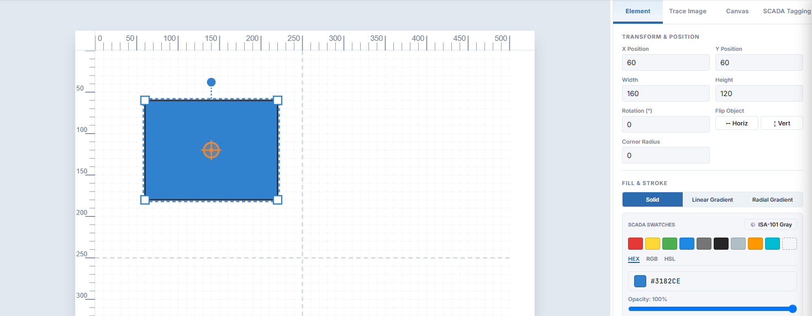
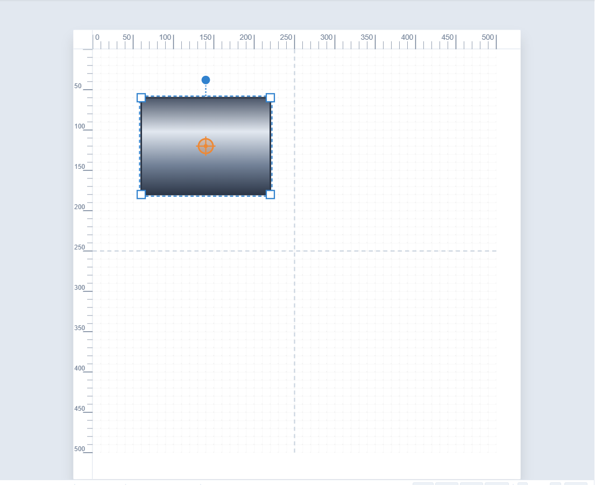
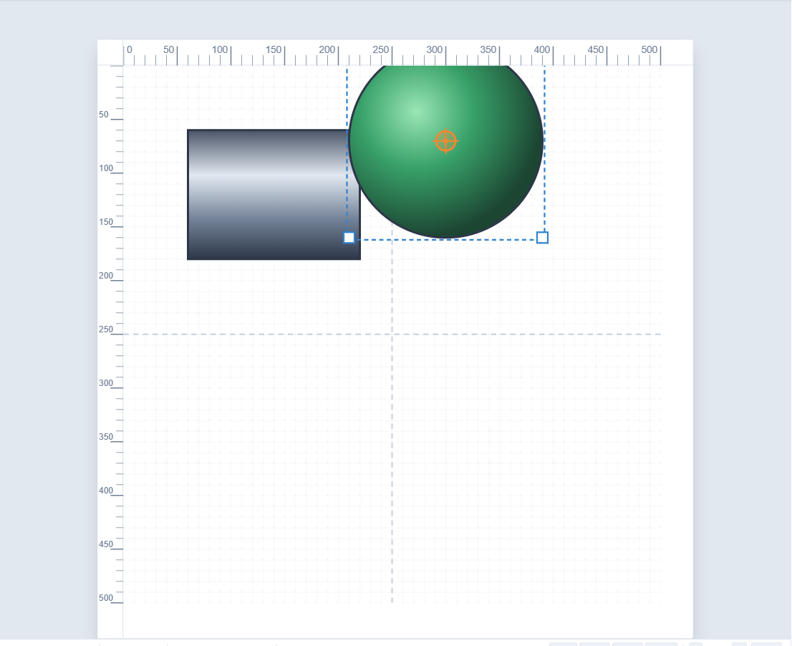
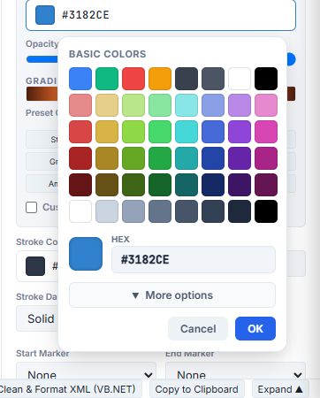

Goal
Move beyond flat colour: use linear and radial gradients, the built-in metal and LED presets, and the SCADA colour picker for exact colours.
Flat colours are clear and quick, and they suit ISA-101 style screens. But gradients can make a pipe look cylindrical or a lamp look lit. SimpleVG builds them for you from any colour, and offers ready-made presets.
Part 1: The three fill modes
Draw a rectangle and look at FILL & STROKE in the Inspector. At the top are three fill modes.

Solid
A single flat colour. This is the default.
Linear Gradient
A colour that changes along a straight line, like light along a cylinder. An Angle slider turns the direction.
Radial Gradient
A colour that changes outward from the centre, like a glowing lamp or a sphere.
Part 2: Preset gradients
Choose Linear Gradient and a GRADIENT SETTINGS section appears, with a preview bar and a row of presets: Steel Pipe, Copper, Brass/Gold, Green LED, Red LED, Blue LED, Amber LED, Off/Gray LED and Water Flow. Click Steel Pipe and the rectangle becomes a length of brushed steel.

Now draw a circle, choose Radial Gradient, and click Green LED. You have a lit indicator lamp.

Note The pipe and LED presets are meant for the look of a finished symbol. If you are following ISA-101, keep to flat, muted colours and save bright colours for alarms.
Part 3: Any colour, as a gradient
You are not limited to the presets. In Linear or Radial mode, click any SCADA Swatch or pick a colour, and SimpleVG turns it into a three-stop metallic or glowing gradient automatically. Tick Custom Stops if you want to choose the start and end colours yourself.
Part 4: The colour picker
Click the colour box beside Fill (or Stroke Color) to open the SCADA colour picker.

A grid of basic colours covers the main hues in light and dark tiers, plus a grayscale.
The HEX box takes an exact value such as #3182CE.
More options adds Red, Green and Blue sliders for fine adjustment.
Changes preview live on the canvas. OK applies them and Cancel puts everything back.
The Opacity slider below the swatches makes a fill partly transparent, from 100% down to 0%.
Recap
Fill modes: Solid, Linear Gradient and Radial Gradient.
Presets such as Steel Pipe, Copper, the LED colours and Water Flow give instant realistic looks.
Any colour you pick in a gradient mode becomes a gradient automatically.
The SCADA colour picker gives basic colours, a hex box, RGB sliders and a live preview with OK and Cancel.
In the next chapter we arrange shapes: layer order, alignment, flipping and circular patterns.